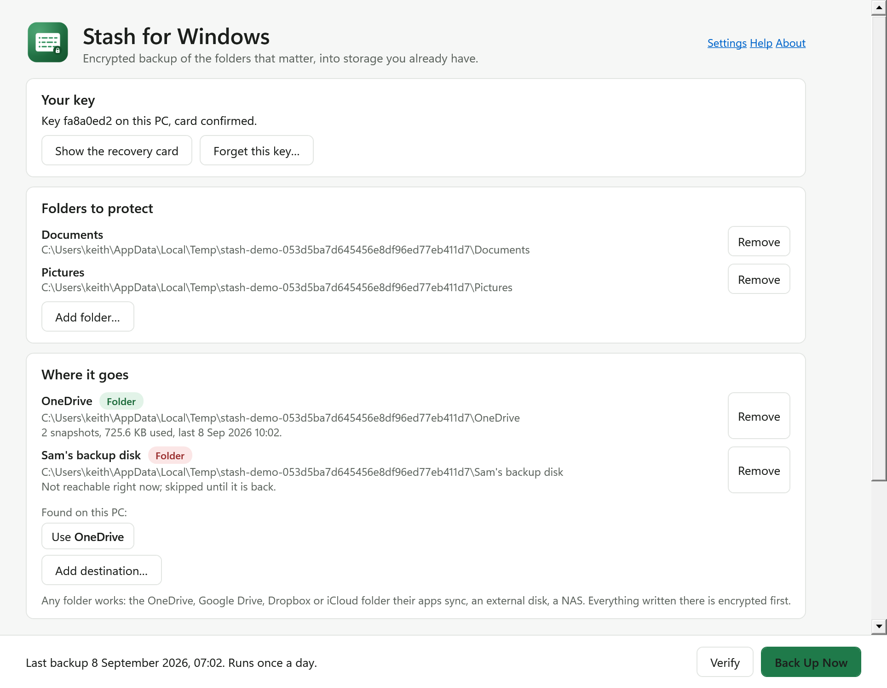
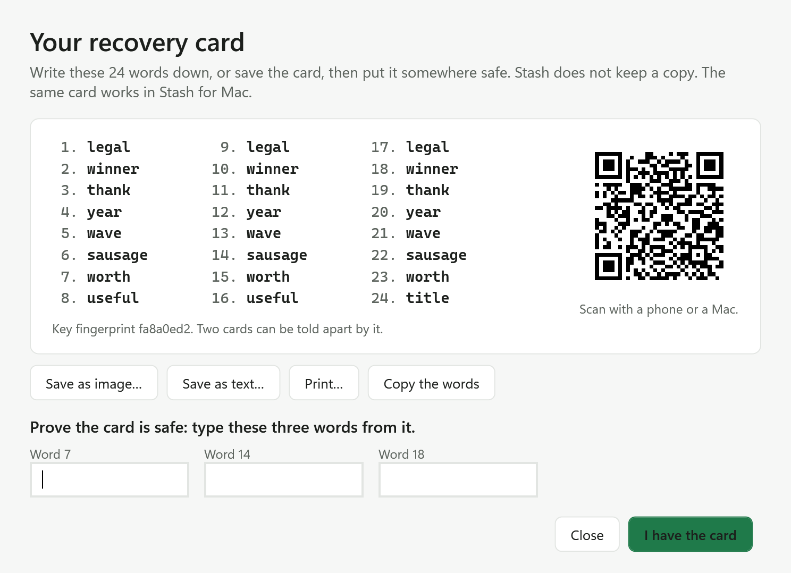

Encrypted backup into the storage
you already have.
The OneDrive that comes with Microsoft 365, the Google Drive that comes with Gmail, Dropbox, iCloud, a disk, a NAS. Several at once, on a schedule, uploading only what changed. The provider only ever holds scrambled blobs. You hold the key, as 24 words on a card.
Download for Windows Free. Open source. Windows 10 and 11, x64 and ARM64. One exe, no installer, never asks to be an administrator.

What it does
Several places at once
Your OneDrive folder and your Google Drive folder and an external disk, each a complete copy. An account can be lost, a disk can fail; two destinations survive either, and the app nags until you have two.On a schedule
Every hour or once a day, as a Task Scheduler task for your account. No window needs to be open, no service runs, and a destination that is unplugged is skipped until it is back.Checks itself
Verify opens every piece of the latest snapshot and restores one random file to prove the whole path works. A backup that has never been verified is a guess.Same card as the Mac
The format is Stash for Mac's, byte for byte. A backup made on either restores on both, and one destination can hold both PCs' snapshots under one card.
Honest limits
Lose the card and the backup is unreadable by anyone, including you; there is no password to reset. Cloud placeholders that are not actually on the PC are listed as skipped, never downloaded behind your back. Pieces are fixed 4 MB, so a small edit in a large file uploads new pieces. The provider, or anyone with your provider password, can delete the folder, which is why two destinations. It never connects to anything, so there is no update check either.
Also a command line: stash backup, stash restore latest D:\back. MIT licensed, signed by its author. More from the same maker: keithadler.github.io.